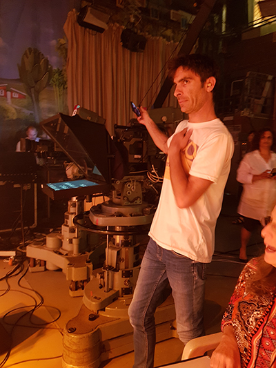
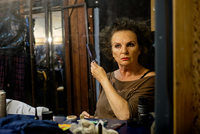

המדריך לבמאי המתחיל
במאי
שחקן ובמאי
קרדיט תמונה: שיר אברמוב
להיות במאי זה פשוט לספר סיפור דרך המצלמה . אתה רואה את הקהל של העלילה ומביא את זה לידי ביטוי למצלמה ולצופים. לספר סיפור ממש טוב.
לפעמים אני מתכנן כל מיני שוטים של צילום ודברים מיוחדים ונתקל בחוסר תקציב, בעיה של לוקיישן או שפשוט לא הולך. זה לא כמו שאתה חושב בהתחלה. לדוגמה הקליפ האחרון שביימתי רציתי תמונות מעגליות סביב הדמות בקליפ ובשביל זה היה צריך דולי עגול והסיפור היה מאוד יקר ונאלצנו לוותר על זה. ניסינו ליצור את אותו אפקט דרך הידיים ופחות עבד. אז לקחנו לבסוף שוטים אחרים שמדברים לסיפור המרכזי. צריך לראות מה פרקטי ולנהל בתוך הלוז של ההפקה עצמה כי יש דד ליין והזמן לא לטובתנו.
הרבה יצירתיות, אמביציה, ראיה נכונה של הדברים, הבנה, הקשבה, ולעמוד על שלך ברגעים מסוימים ולהיות מוכן לכל מצב ולכל קבלת החלטות. חשוב שיהיה גם כושר מנהיגות ולדעת להוביל אנשים אחריך.
אני עוסק כרגע בקליפ אז זה תלוי בקליפ ומה שהשיר מדבר עליו. כרגע אני עובד עם אמן שהוא נורא כותב מתוך פגמים של עצמו אז החלטתי לעשות איתו איזשהו מסע שמעבירים אותו בין זמנים שבסופו של דבר הוא נשלח מהעתיד להווה לתקן את כל הפגמים שלו.
לנסות הכל, לא לקחת דברים כבלתי אפשרי כי הכל אפשרי אם רק רוצים והשמים הם הגבול. לשאוף להכי גבוה גם לדברים שלא סטנדרטים ולא לפחד ללכת אחרי החלומות ולספר סיפור בצורה הכי אותנטית ולספר משהו שהוא האמת שלכם.
במאית, שחקנית ומורה למשחק
קרדיט תמונה: דויד קפלן
במאי צעיר זה להיות בן אדם שיכול להיות בקשר גם עם הקבוצה שאיתה הוא עובד וגם עם מי שמנחה אותו
הציפיה מהשחקנים לתוצאה מסוימת לא תמיד מגיעה לאותה תוצאה.
מיקי יכולת לעבוד עם יוצרים אחרים תפאורה תלבושות תאורה . היכולת ליצור איתם שיתוף פעולה שמצליח לקבל רעיונות וגם לתת מעצמך לשיתוף פעולה כי הרווחים מאוד גדולים. לעמוד ברגעים שאין תוצאה והדברים לא ברורים.
אנשים שבתחילת דרכם , יצא לי לראות תלמידים בתחילת דרכם כמו עידו קולטון שביים במגמה הצגה כולם רוצים לחיות של חנוך לוי ומסתבר שאפשר בגיל צעיר מאוד להצליח ולהיות בעל דמיון יוצר מאוד גדול, גם בתחום הויזואלי גם בתחום הדרכת השחקנים, שיש כשרון צריך לתת מקום לדמיון הזה ומפעם לפעם לתת כיוונים בתור מורה, זו ההצגה הראשונה שעשינו במגמה שזכורה לי כציון דרך לתת אמון ביוצרים צעירים עם כל המתחים והצעקות, ולמדתי מזה המון.
לפתוח את עצמך להמון דברים, לקבל השראות, לראות יצירות אחרות ותחומים אחרים של אומנות .
במאית, שחקנית ומורה למשחק
להיות במאי זה בעמם להיות מנצח וקפטן של הספינה והוא שולט בעצם בכל הרעיון והוויזן שלו בשיתוף עם כל היוצרים האחרים.
ההתנגשות בין החלום למציאות, בין איך שהבמאי רואה ומדמיין את הדברים למציאות הכלכלית למציאות הטכנית.
גמישות גדולה ויכולת החלה גבוהה יכולת הנהגה גבוהה. להיות מנהיג בדיוק כמו קפטן. מצד אחד להיות סקרן ולדעת להכיל רעיונות של אחרים. לא לפחד להשיט את הספינה.
יש לי קבוצת תאטרון חובבים במכון ויצמן של דוקטורים פרופסורים ואני יכולה להגיד שיש אחראיות לעבור חוויה שהיא מכוננת. חוויה המטלטלת שהייתה לי בנפוליאון חי או מת שזה משהו שלא באזור הנוח שלי והיה כנגד כל הסיכויים והייתה חויה שלימדה אותי גם לא להיות אמבינציוית מידי כי יש לזה מחיר . לדעת שיש לי אחראיות על אנשים ושחקנים. הייתה תחושה של בטחון וחיפוש סקרני ויצירתי ובהצגה זו פעם ראשונה שטעמתי את הטעם של להיות אבודה לרגעים. זה היה מפחיד אבל מלמד מאוד ויצאו מזה דברים מדהימים.
להרשות לטעות להרשות לחפש ולהיות סקרן ולא להגיע סגור עם החלטות מראש. אלא כן לבוא עם חזון אבל לתת את המקום לשמוע קול אחר או לנסות דברים אחרים. כל הזמן להתחדש ולדעת שיש מה ללמוד.